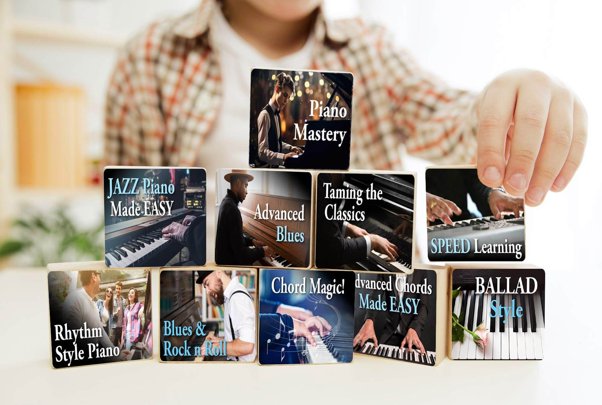
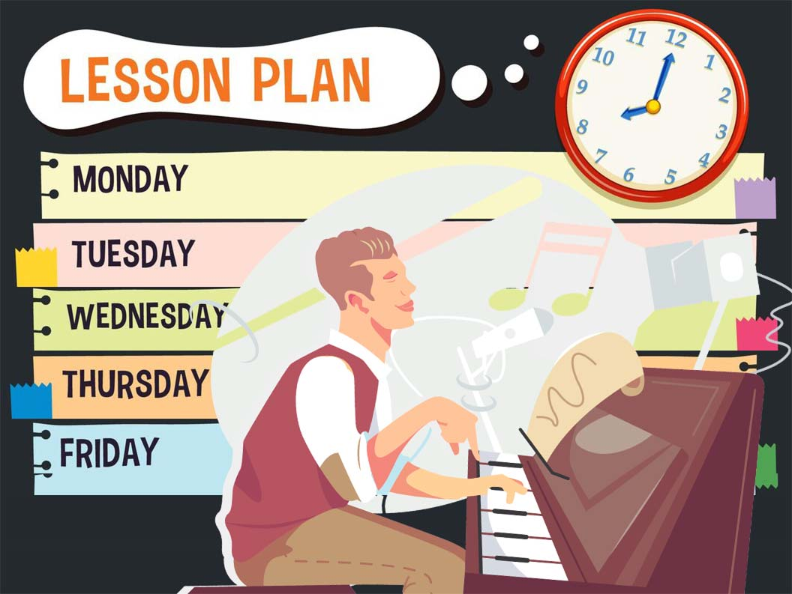
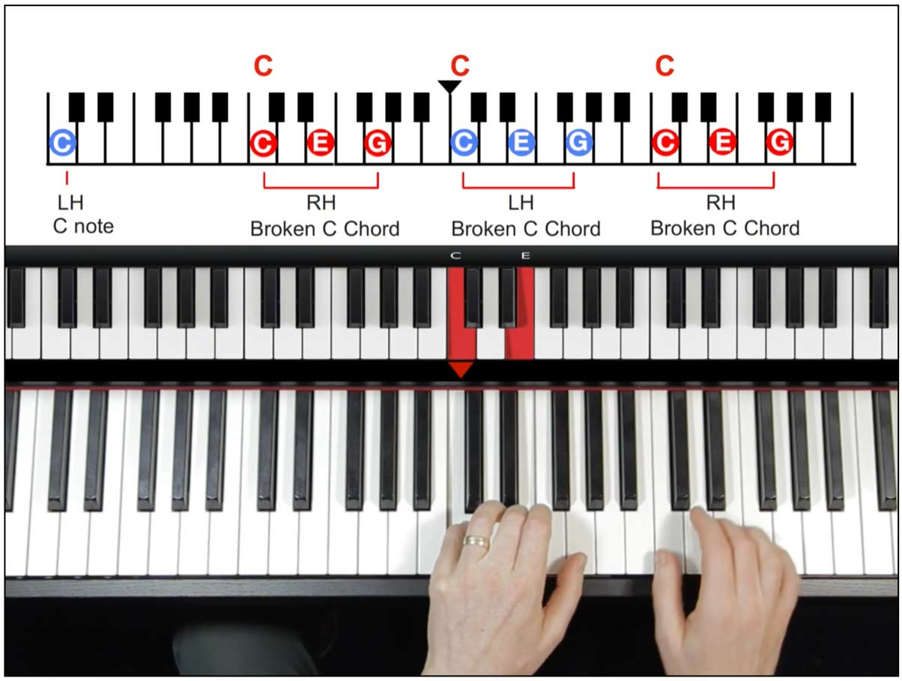

Pianoforall Review 2026: Learn Piano Faster With Interactive Ebooks, Videos, Audio Lessons and Official Access
A complete buyer-focused guide to Pianoforall, the digital piano learning system built around interactive ebooks, keyboard diagrams, audio examples and video lessons for people who want to start playing real music without waiting years.

Quick Product Summary
What Is Pianoforall?
Pianoforall is a digital piano learning program created for people who want to move from “I wish I could play” to actually sitting at a keyboard and playing songs, rhythms and chord patterns with confidence. The product page presents it as one of the long-running online piano courses, with more than half a million students worldwide. The core promise is simple: instead of spending years stuck in dry theory, the course teaches practical playing patterns first, then builds your music knowledge around what your hands are already learning.
That structure is important. Many beginners quit piano because the first few weeks feel boring. They are asked to read notation, count slowly, practice tiny exercises and wait a long time before anything sounds like music. Pianoforall takes a more direct route. It starts with rhythm-style piano, chords, left-hand patterns and familiar musical movement, so the learner can hear progress quickly. This does not mean there is no theory. It means the theory is introduced after the learner has a reason to care.
The course is delivered through a set of interactive ebooks supported by embedded audio and video. That means a student can read an explanation, see a keyboard diagram, listen to the pattern, watch how it is played, then try it immediately. This is the reason the course can feel easier than a traditional book-only method. It combines visual, written and audio instruction in one flow, which is useful for beginners who do not want to manage separate files, random videos or confusing lesson notes.
Use the official access button to check the current offer, bonuses and guarantee terms.
Why This Course Hooks So Many Beginners
The strongest hook behind Pianoforall is the idea that learning piano should feel rewarding early. A beginner does not want to spend months doing exercises that sound like homework. They want to sit down, touch the keys and feel that music is coming out. Pianoforall leans into that desire by focusing on practical rhythm patterns and chord progressions that can be reused in many songs. Once a student understands a few patterns, the keyboard starts to feel less mysterious.
Another hook is that the course covers multiple styles. A learner is not locked into only classical notation or only pop chords. The product material highlights ballads, pop, blues, jazz, ragtime and classical pieces. That variety matters because different people are motivated by different sounds. One person may want to play emotional ballads at home, another may want bluesy rhythm patterns, and another may simply want enough piano ability to understand music better. The course tries to keep each learner curious by introducing new styles as they move forward.
There is also a practical money angle. Traditional private piano lessons can become expensive very quickly, especially in the USA, Germany and Australia where weekly lessons can add up over months. Pianoforall is positioned as a one-time digital purchase. That does not replace the personal feedback of a live teacher, but it does give budget-conscious learners a structured path they can start from home. For people who are unsure whether they will stick with piano long-term, that can be a powerful reason to begin.

The course uses repeated building blocks so students can reuse patterns across different styles.How Pianoforall Works Step by Step
Pianoforall works by giving the learner a guided sequence instead of a random collection of lessons. The student begins with simple rhythm piano patterns and chords. These early lessons help the hands get used to movement, timing and coordination. Instead of waiting until the student can read complex sheet music, the course encourages immediate playing through visual patterns and practical examples.
As the student progresses, the lessons expand into different musical styles. The course introduces ballad-style playing, blues and rock patterns, chord magic, jazz piano, advanced chords, speed learning, memory tricks and classical pieces. This gives the learner a feeling of movement from beginner basics toward more complete musicianship. The idea is not only to memorize songs, but to understand how music is put together.
The interactive ebook format is central to the method. A typical student can open a lesson, read a short explanation, see the keyboard diagram, press play on the audio or video, and copy the example. This loop is repeated again and again. It makes the course feel like a guided workbook rather than a passive video library. For many learners, that is easier to follow because the lesson stays organized in one place.
The recommended approach is consistency. A student does not need to practice for hours each day, but regular practice matters. Even 20 to 30 minutes of focused practice can create progress if the learner follows the sequence and repeats the patterns. Pianoforall is designed to make that practice feel more musical, which is why many buyers are attracted to it after trying slower methods.
What Is Included Inside Pianoforall?
The product page describes Pianoforall as a complete digital curriculum with interactive ebooks, audio clips and video demonstrations. The learning material is organized so beginners are not forced to guess what to study next. Each part builds on the previous one, which helps reduce the common problem of jumping between random YouTube tutorials and never developing a real foundation.
For a beginner, this mix can be more useful than a normal PDF because piano is both visual and physical. Seeing the keyboard matters. Hearing the rhythm matters. Watching the timing matters. Pianoforall puts these learning pieces together so the student can move through the material with less confusion.

The course is built for practical learning, not only theory reading.What Customers Are Saying About Pianoforall
The official product page includes customer feedback and review-style comments from learners who used the course. The comments below are shortened and presented as buyer feedback highlights.
The review says Toni was “about to give up learning piano” before finding the lessons and feeling progress after struggling with traditional reading-based methods.
Brian’s feedback describes Pianoforall as the piano course he recommends to his students, calling it a major inspiration.
This review highlights the embedded video and audio files and says the course makes learning piano fun and easier to follow.
Jane’s feedback says she was excited by the techniques and had already learned a lot while still early in the course.
Customer feedback is useful because it shows what people respond to most: the course feels organized, the examples are playable, and the learner can make progress without feeling trapped in theory. Results still depend on practice, patience and consistency, but the review material supports the idea that many students find the method easier to stick with.
Who Is Pianoforall Best For?
Pianoforall is best suited for beginners and returning learners who want a practical path into piano. It is especially attractive to people who tried traditional lessons, theory books or free online videos and still felt stuck. If you have a keyboard at home but rarely use it because you do not know where to start, this course gives you a direct sequence to follow.
It can also suit adults who think they are too old to learn. One review in the uploaded material comes from a learner describing himself as “74 years young,” which shows the course is marketed beyond children and school students. Adults often need a method that respects their time and gives them quick wins. Pianoforall’s rhythm-first approach can make that first stage feel less intimidating.
The course may also work well for singers, guitarists, producers and songwriters who want keyboard skills for creativity. You do not need to become a concert pianist to benefit from understanding chords and patterns. Many musicians use piano as a writing tool, and a course that teaches practical chords can help unlock more musical ideas.
For students in the USA, Germany and Australia searching for an online piano course, the biggest advantage is flexibility. You can learn from home, practice around school or work, and repeat lessons as many times as needed. A live teacher moves at a scheduled pace, but digital lessons let you replay the same section until it clicks.
What Makes The Rhythm-Style Method Different?
The rhythm-style method is the heart of Pianoforall’s appeal. Traditional piano lessons often begin with reading notes one at a time. Pianoforall begins with patterns that help both hands create a fuller sound. This matters because beginners are motivated by sound. When a student hears something that resembles real music, practice becomes less boring and more addictive in a positive way.
Chord-based learning is also efficient because chords are used everywhere. Pop songs, worship songs, ballads, blues progressions, jazz standards and many modern tracks rely on repeatable chord movement. Once a learner understands how chords are built and how rhythms shape them, they can begin recognizing patterns in many songs. That creates a feeling of control.
The course does not ignore notation forever. Instead, it uses a more practical order. First, you learn to make music. Then, as the lessons progress, theory and notation become easier because they connect to something your hands already understand. For many learners, this is less frustrating than trying to decode symbols before they can play anything enjoyable.

Chord patterns help beginners understand the keyboard as a reusable musical system.Styles You Can Explore With Pianoforall
One of the smartest parts of the offer is the variety of styles. A beginner may start with simple rhythm piano, but the course does not stop there. It introduces different musical flavors so the learner keeps discovering something new. This is similar to the hook-based landing-page structure used by strong product pages: each section gives the reader a fresh reason to continue.
Ballad style can help learners create emotional, full-sounding piano parts. Blues and rock sections can make the keyboard feel more energetic. Jazz piano introduces richer harmony and more sophisticated sounds. Chord magic helps students understand how songs are built. Classical-style lessons give a taste of more traditional playing without making the entire course feel like a formal exam.
This variety can keep motivation alive. When a learner gets tired of one style, another style pulls them forward. The result is a course that feels more like a musical journey than a checklist. That is important because the best piano course is not only the one with the most information. It is the one a student actually finishes.
Why Official Access Matters
For digital products, the official page is the safest route because it is where the current offer, download access, support details, guarantee terms and any active bonuses are controlled. Random third-party pages may be outdated, incomplete or unsupported. If you decide to try Pianoforall, use the official access link so you can check the live checkout page before buying.
The current product page material mentions a one-time payment and a 60-day money-back guarantee. Since online offers can change, the responsible step is to confirm the price, guarantee and included materials on the checkout page before placing an order. This protects the buyer and keeps expectations clear.
Review the live price, access details and guarantee terms on the official Pianoforall page.
Will Pianoforall Work For You?
Pianoforall can be a strong choice if you want structure, practical playing and a beginner-friendly learning path. It will not magically make someone skilled without practice. No piano course can do that. But it can remove many obstacles that stop beginners from continuing. It gives you a starting point, a sequence, a method and examples that sound musical early.
The course may work especially well if you are the type of learner who enjoys seeing and hearing examples instead of only reading theory. It may also help if you need quick progress to stay motivated. If you want to play songs, understand chords and build confidence at the keyboard, the format is designed around those goals.
The best way to approach it is simple: set a small practice schedule, follow the lessons in order, repeat the examples, and avoid jumping too far ahead. Even if you only practice a little each day, consistent repetition can create momentum. Piano rewards regular contact. A course like this gives you a reason to keep returning to the keys.
Frequently Asked Questions
Is Pianoforall for complete beginners?
Yes. The course is promoted as beginner-friendly and designed to take learners from basic rhythm patterns toward more advanced material. Returning learners can also use it to rebuild confidence.
Do I need a real piano?
You can use a piano or keyboard. A basic keyboard is enough to begin, as long as you can practice regularly and hear what you are playing.
Is this a physical product?
No. Pianoforall is a digital course. The material is accessed through digital lessons, interactive ebooks, video and audio support.
How fast can I learn?
That depends on your practice time, consistency and current skill level. The course is built to help students play musical patterns sooner than many traditional methods, but results still require effort.
Is there a guarantee?
The uploaded product page mentions a 60-day money-back guarantee. Always confirm the current guarantee details on the official checkout page before buying.
Final Verdict: Why Pianoforall Is Worth Checking Today
Pianoforall stands out because it speaks to the real reason many people want piano lessons: they want to play music, not spend years feeling lost. The course combines interactive ebooks, audio, video and practical rhythm patterns so beginners can start with something that feels musical. It offers structure for people tired of random tutorials and flexibility for people who want to learn from home.
If you have been delaying piano because you think it is too hard, too expensive or too late to start, this course gives you a realistic way to begin. Check the official page, review the current offer and decide whether the method fits your learning style.
Go To Pianoforall Official WebsiteThis article is for informational purposes only. Product details, price, bonuses and guarantee terms can change. Always verify the current offer on the official website before ordering.